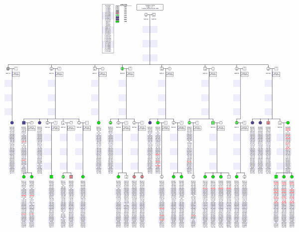
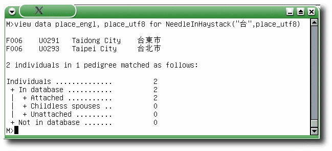
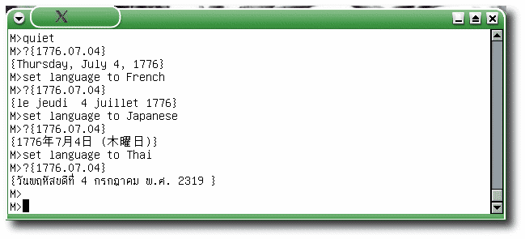

|
AllLogFiles Ref. Date: 2004-04-12
|
Percent Complete: 100%
|
|
Description
To change the names of Madeline's three log files in the past required three separate assignment statements:
M>LogFile="newname.log"
M>DetailFile="newname.dtl"
M>ErrorFile="newname.err"
You can now change all three file names at once using a single
base file name stored in the AllLogFiles variable. See
example below.
|
Example
M>// The old way:
M>?LogFile
"madeline.log"
M>LogFile="MyLogFile.log"
LogFile has been changed from "madeline.log" to "MyLogFile.log"
M>DetailFile="MyDetailLogFile.dtl"
DetailFile has been changed from "madeline.dtl" to "MyDetailLogFile.dtl"
M>ErrorFile="AreYouKiddingMeIDontMakeMistakes"
ErrorFile has been changed from "madeline.err" to "AreYouKiddingMeIDontMakeMistakes"
M>// The new way:
M>AllLogFiles="MySuperDuperAnalysis"
All log files now have "MySuperDuperAnalysis" as the base name:
LogFile = "MySuperDuperAnalysis.log"
DetailFile = "MySuperDuperAnalysis.dtl"
ErrorFile = "MySuperDuperAnalysis.err"
M>
|
|
Array Indices Are No Longer Zero-Offset Ref. Date: 2002-05-06
|
Percent Complete: 100%
|
|
Description
In previous versions of Madeline, array indices were zero-offset, i.e., _offspring[0] referred to the first child. In Madeline 0.935, array indices start at one.
The elimination of zero-offset arrays is part of an ongoing effort to make Madeline easier to use.
|
Example
M>//
M>// This example queries the relationships sample data
M>// set distributed with the new version of the program:
M>//
M>?_offspring[1].relationship
"OFFSPRING 1"
M>?_offspring[2].relationship
"OFFSPRING 2"
M>?_offspring[3].relationship
"OFFSPRING 3"
|
|
Attributes, Constants, and Field Variables Ref. Date: 2002-03-20
|
Percent Complete: 100%
|
|
Description
The use of mnemonic prefixes to distinguish constants from attributes has now been formalized: the hash character, "#", prefixes all symbolic constants, while the underscore character, "_", prefixes all attributes. As before, Field variables are distinguished by the lack of a special prefix.
Constants are like variables but with fixed, unchangeable values. All constants now begin with a hash sign, "#":
#PI
#E
#TRUE
#AFFECTED
#FALSE
#UNAFFECTED
Use of the hash sign makes it clear that #AFFECTED is not the same thing as, for example, a field variable in your data table called "AFFECTED".
Attributes store calculated information about individuals, such as the number of offspring, or percentage of genotyped markers for the individual. All attributes now begin with the underscore character, "_":
_NumberOfOffspring
_PercentGenotyped
_NumberOfMates
_IsAffected
In contrast with constants and attributes, Field variables do not have a prefix.
|
Example
M>// Go to record 124:
M>go 124
M>// What is the STUDYID and affection status (AFFECTED) of this individual?
M>? STUDYID + " : " + AFFECTED
F0045-15 : A
M>// Since the "A" by default means "affected", _IsAffected should be set to #true:
M>? _IsAffected
1
M>// The constant #affected should be equivalent to #true:
M>? _IsAffected==#affected
1
|
|
Bug Fix: Length of Genotype Fields Ref. Date: 2003-02-24
|
Percent Complete: 100%
|
|
Description
Madeline's native MBASE table format allows column identifiers (i.e., field names) to be up to 32 characters long. This differs from the older and arguably obsolete DBASE and SAS formats which permitted only 10 and 8 character field names, respectively.
However, old code from the DBASE days was causing marker names to be truncated to 10 characters in the marker map containers, even if the marker names and corresponding genotype column headings were longer than 10 characters. This resulted in
failed marker name lookups and other aggravations.
This bug has been fixed -- 2003.02.24.ET
|
Example
-- No example available --
|
|
Console Editors -- Bug Fix Ref. Date: 2004-04-15
|
Percent Complete: 100%
|
|
Description
Previously there was a bug when a user tried to use a console-based editor like vi as the editor to be called
by the edit command. This bug affected keyboard control when vi or another console-based program was running as a child process with Madeline still running as the parent process.
This bug has now been fixed. Users can now specify vi or
any console-based editor just as easily as any X-windows-based
editor.
|
Example
An example is provided in the new documentation
|
|
Conversion of p-values to LOD scores Ref. Date: 2003-01-29
|
Percent Complete: 100%
|
|
Description
A new convenience function has been added to calculate the negative base 10 logarithm, or LOD score, from a p-value:
lod()
|
Example
M>?lod(0.5)
0.30103
M>?lod(0.01)
2
M>?lod(0.001)
3
M>
|
|
Count and Percentage of Markers Genotyped Ref. Date: 2002-03-20
|
Percent Complete: 100%
|
|
Description
Two new attributes have been added, _GenotypeCount and _PercentGenotyped. These attributes facilitate queries and subsetting based on the percentage of markers typed on individuals.
The values of these attributes are dependant upon which genotype fields are toggled on for output. Suppose out of a set of 300 markers in your data you toggle on a subset of just 20 representing chromosome 11. For some individual in your data set, only 15 of the 20 markers are typed. In this case,
_GenotypeCount will be 15 and _PercentGenotyped will be 75%. If you toggle on additional markers, these attributes will change.
|
Example
M>// In a data set with 332 individuals in 27 pedigrees and over 400 markers,
M>// how many individuals in how many pedigrees are typed for at least
M>// 80% of all markers? Report percentages for matching individuals:
M>view data _PercentGenotyped for _PercentGenotyped>=80
F0001 G00158 83.1325
F0001 G00164 80.9237
F0001 G00165 82.1285
F0001 G00166 81.1245
F0001 G00169 81.5261
F0001 G00170 81.9277
.
.
.
41 individuals in 7 pedigrees matched as follows:
Individuals .............. 41
+ In database ........... 41
| + Attached ........... 36
| + Childless spouses .. 0
| + Unattached ......... 5
+ Not in database ....... 0
|
|
JulianDayNumber User Function Ref. Date: 2003-12-17
|
Percent Complete: 100%
|
|
Description
A complementary pair of functions allows round-trip conversion of Gregorian calendar dates to Julian day numbers and back again.
The DateToJulian() function returns the Julian day number from a date. The JulianToDate() returns a date in the Gregorian calendar from a Julian day number. These functions were added in order to validate Madeline's Julian-day-based calendar code. They are useful for historical and astronomical calculations.
A function called today() has also been added for convenience.
|
Example
M>?DateToJulian({1582.10.04})
2299160
M>?DateToJulian({1582.10.05})
JulianDay(): October 5th to 14th were skipped in October of 1582
when Pope Gregory XIII implemented the calendar reforms
of the commission headed by the Jesuit mathematician and astronomer
Christoph Clavius.
DateToJulian({1582.10.05})
^^^
1 SYNTAX ERROR M>?DateToJulian({1582.10.15})
2299161
1 SYNTAX ERROR M>?today()
{Thursday, December 18, 2003}
1 SYNTAX ERROR M>?DateToJulian(today())
2452992
1 SYNTAX ERROR M>
|
|
Label, Color, and Gray Arrays Ref. Date: 2004-04-28
|
Percent Complete: 100%
|
|
Description
After issuing a TOGGLE ICON FLAG command, a set of associative arrays are created based on the name of the categorical variable
that has been toggled on. For example, if AFFECTED has been
toggle on, we would have:
- Affected_Label[] containing labels for display on the pedigree drawings
- Affected_Color[] containing color triplets for display on
colored pedigree drawings
- Affected_Gray[] containing numeric shades of gray for display on black and white pedigree drawings.
Elements in all of these arrays are easily changed,
allowing the user to quickly customize the colors, shades of
gray, and labels used for the display of categorical levels of
variables on the icons in pedigree drawings.
|
Example
-- Nice documentation with illustrative figures is provided
in the new 0.935 documentation under the TOGGLE ICON FLAGS command --
|
|
Language And Locale Conventions Ref. Date: 2003-12-19
|
Percent Complete: 100%
|
|
Description
Madeline v. 0.935 supports the display of dates using local language conventions for more than a dozen major languages and numerous Unicode-based UTF-8 locales. Non-Unicode, non-UTF-8 locales are not supported.
On start up, the program checks the LANG and LC_CTYPE environment variables. If one or the other of these indicate a UTF-8 locale, then the program investigates whether the language being used is one supported by Madeline. If the language is supported, Madeline automatically sets the
language convention variable to that language setting.
A number of major languages are supported: British and American
English, Arabic, Chinese, Finnish, French, German, Greek, Italian, Japanese, Portugese, Russian, Spanish, and Thai. Current support is limited to displaying dates in the local language.
Madeline defaults to American English for *ALL* non-UTF-8 locales.
|
Example
edtrager@eyegene:~> LANG=zh_CN.UTF-8 madeline
______________________________________________________________________________
__ __ _ ______ _______ _ _ __ _ _______
| \ / | / \ | ___ \ | _____| | | | | | \ | | | _____|
| \/ | / ^ \ | | \ \ | |___ | | | | | \ | | | |___
| |\ /| | / /_\ \ | | | | | ___| | | | | | |\ \| | | ___|
| | \/ | | / ___ \ | |___/ / | |_____ | |______ | | | | \ | | |_____
|_| |_| /__/ \__\ |_______/ |_______| |________| |_| |_| \__| |_______|
______________________________________________________________________________
______________________________________________________________________________
Version 0.935
Written by Edward H. Trager
...
| Language | Chinese | Language convention used for date, time |
| MapDetails | OFF | LIST MAP summary display |
| SaveAlleleFrequencies | OFF | Calculate new frequencies on next OPEN |
| Time | | 2003年12月19日 (星期五) |
| Verbosity | VERBOSE | All messages are printed to the console |
+-----------------------+-----------+-----------------------------------------+
M>?today()
{2003年12月19日 (星期五)}
M>
|
|
Reading and Saving Allele Frequencies Ref. Date: 2004-04-15
|
Percent Complete: 100%
|
|
Description
Previous versions of Madeline relied on a very awkward mechanism
for using allele frequencies from a previous analysis, and there
was no way to import allele frequencies from external analyses
such as from a Mendel run.
Madeline now has two new commands, save and read which allow one to save and read sets of allele frequencies, respectively. The allele frequencies can be
from a run of Madeline (which uses gene counting not taking
family relations into account), or from an external source, such
as Mendel (which has options to correct for familial relationships).
|
Example
The new commands are now extensively documented in the new
documentation.
|
|
Regular Expression Matching Ref. Date: 2002-05-24
|
Percent Complete: 100%
|
|
Description
RegExpMatch() allows you to use POSIX 1003.2 regular
expressions to perform string pattern matching in queries.
For those of you who happen to be unfamiliar with regular expressions, here is one tutorial that will give you an idea of the power of regular expressions. Many books on computer programming also discuss regular expressions.
|
Example
M>//
M>// Simple Regular Expression Matching Example
M>// ------------------------------------------
M>// See if a markername conforms to the "DnnSmmmm" annotation convention
M>// (where nn is a chromosome number, and mmmm is the size). Only the
M>// last example matches the pattern:
M>//
M>?regexpmatch("^D[0-9]{1,2}S[0-9]{1,4}$","D10S12345")
0
M>?regexpmatch("^D[0-9]{1,2}S[0-9]{1,4}$","D10S123x")
0
M>?regexpmatch("^D[0-9]{1,2}S[0-9]{1,4}$","D10D123")
0
M>?regexpmatch("^D[0-9]{1,2}S[0-9]{1,4}$","D10S1234")
1
|
|
SET DELIMITER Command Ref. Date: 2002-05-31
|
Percent Complete: 100%
|
|
Description
The new SET DELIMITER TO [TAB|SPACE|COMMA|"<OTHER QUOTED CHARACTER>"] command allows you to specify a delimiter to use for tabular results, such as those generated by the VIEW DATA command. TAB is the default.
The ability to set the column delimiter makes it easier to cut and paste tabular output into other programs, such as spreadsheet programs.
|
Example
M>set delimiter to comma
+-----------------------+-----------+-----------------------------------------+
| Variable or State Flag| Setting | Description |
+-----------------------+-----------+-----------------------------------------+
| OTHER SETTINGS | | |
+-----------------------+-----------+-----------------------------------------+
| Delimiter | COMMA | Delimiter for tables and other output. |
. . .
. . .
. . .
|
|
Square Command Ref. Date: 2003-04-28
|
Percent Complete: 100%
|
|
Description
2004.04.28.ET ADDENDUM: The SQUARE command is now obsolete. Very similar, but more robust, functionality has been incorporated into the RECTIFY command. Also, it is
no longer necessary for the HEADER lines to be shorted than the
lines in the DATA block. It is only necessary to have one or
more spaces between the HEADER and DATA.
The new square command rectifies non-rectangular data blocks so that they are rectangular and can be recognized by Madeline.
Recall that a Madeline data file consists of a HEADER at the top
followed by a DATA block. The HEADER lines must be shorter
than the DATA lines, and the DATA lines must be all the same length. Sometimes however the DATA lines may be of uneven length due to spaces or tabs at the ends of some lines. The
square command repairs this situation by padding the ends of DATA lines
until they are all the same length.
For example, suppose the following file shown schematically, where "h"s represent
header lines and "x"s represent data lines. Note there is no
blank line between the header and data blocks: this is legal
in Madeline, although not recommended:
hhhhhhhhhh
hhhhhhhh
hhhhhhhhhhh
hhhhhhhhh
hhhhhhhhhhh
xxxxxxxxxxxxxxxxxxxxxxxxxxxxxxxxxxxxxxxxxxxxxxxxx
xxxxxxxxxxxxxxxxxxxxxxxxxxxxxxxxxxxxxxxxxxxxxxxx
xxxxxxxxxxxxxxxxxxxxxxxxxxxxxxxxxxxxxxxxxxxxxxxxxxxxxx
xxxxxxxxxxxxxxxxxxxxxxxxxxxxxxxxxxxxxxxxxxxxxxxxxxxx
xxxxxxxxxxxxxxxxxxxxxxxxxxxxxxxxxxxxxxxxxxxxxxxxxxxxxx
xxxxxxxxxxxxxxxxxxxxxxxxxxxxxxxxxxxxxxxxxxxxxxxxxxxx
xxxxxxxxxxxxxxxxxxxxxxxxxxxxxxxxxxxxxxxxxxxxxxxxxxxxx
xxxxxxxxxxxxxxxxxxxxxxxxxxxxxxxxxxxxxxxxxxxxxxxxxxx
xxxxxxxxxxxxxxxxxxxxxxxxxxxxxxxxxxxxxxxxxxxxxxxxxxxxxx
An attempt to recognize this file will fail due to the uneven data line lengths.
After executing the square command, Madeline will create a new file with a ".mod" extension. Using colored "x"s to represent padded spaces, this new file will look like this:
hhhhhhhhhh
hhhhhhhh
hhhhhhhhhhh
hhhhhhhhh
hhhhhhhhhhh
xxxxxxxxxxxxxxxxxxxxxxxxxxxxxxxxxxxxxxxxxxxxxxxxxxxxxx
xxxxxxxxxxxxxxxxxxxxxxxxxxxxxxxxxxxxxxxxxxxxxxxxxxxxxx
xxxxxxxxxxxxxxxxxxxxxxxxxxxxxxxxxxxxxxxxxxxxxxxxxxxxxx
xxxxxxxxxxxxxxxxxxxxxxxxxxxxxxxxxxxxxxxxxxxxxxxxxxxxxx
xxxxxxxxxxxxxxxxxxxxxxxxxxxxxxxxxxxxxxxxxxxxxxxxxxxxxx
xxxxxxxxxxxxxxxxxxxxxxxxxxxxxxxxxxxxxxxxxxxxxxxxxxxxxx
xxxxxxxxxxxxxxxxxxxxxxxxxxxxxxxxxxxxxxxxxxxxxxxxxxxxxx
xxxxxxxxxxxxxxxxxxxxxxxxxxxxxxxxxxxxxxxxxxxxxxxxxxxxxx
xxxxxxxxxxxxxxxxxxxxxxxxxxxxxxxxxxxxxxxxxxxxxxxxxxxxxx
Note that the new file now also includes a blank line between
the HEADER and DATA blocks.
|
Example
-- Documentation on the RECTIFY command provides complete
coverage --
|
|
Toggle Command Ref. Date: 2003-03-26
|
Percent Complete: 100%
|
|
Description
The TOGGLE command now supports three new features:
- The TOGGLE command now supports the optional keywords
ON and OFF for use when setting OUTPUT FLAGS.
- You can now also TOGGLE markers by chromosome using
the syntax, "TOGGLE ON|OFF OUTPUT FLAGS FOR CHROMOSOME MARKERS."
A marker map must be LOADed in order for this to work.
- You can now also TOGGLE on or off just the Mendelian inconsistent markers in a data set. For example, you might want to print pedigree drawings showing only the inconsistent markers in order to fix them. Alternatively, you might want to toggle inconsistent markers off prior to preparing a data set. The syntax is "TOGGLE ON|OFF OUTPUT FLAGS FOR _IsMendelianInconsistent".
The command, "TOGGLE OUTPUT FLAGS"
(without the ON or OFF keyword) turns "on" columns
that were "off" and "off" any columns that were already "on".
While that behaviour is satisfactory in many cases, there exist times when a
range of columns might contain some columns that are toggled "on" and others
that are "off" and you want to force the entire range to be either all "on"
or all "off". The addition of the optional ON and OFF keywords
addresses this need.
For genescan studies with hundreds of markers, the ability toggle sets of
marker fields on or off by chromosome, or based on Mendelian inconsistency issues, is a time-saving convenience.
|
Example
M>list fields
1.FAMID Co__1 17.D1S249 Go__2 33.D10S217 Go_18
2.STUDYID Co__2 18.D1S425 Go__3 34.D10S575 Go_19
3.SEX Co__3 19.D1S466 Go__4 35.D10S587 Go_20
4.FATHER Co__4 20.D1S1647 Go__5 36.D10S1230 Go_21
5.MOTHER Co__5 21.D1S1660 Go__6 37.D10S1237 Go_22
6.MZTWIN Co__6 22.D1S2640 Go__7 38.D10S1248 Go_23
7.DZTWIN Co__7 23.D1S2757 Go__8 39.D10S1693 Go_24
8.AFFECTED Co__8+ 24.D1S2877 Go__9 40.D10S1741 Go_25
9.CAFFECTED * 25.D1S3725 Go_10 41.D17S784 Go_26
10.AGE Po__1 26.D9S169 Go_11 42.D17S914 Go_27
11.AFF_BROAD Po__2 27.D9S171 Go_12 43.D17S928 Go_28
12.CAFF_BROAD Po__3 28.D9S269 Go_13 44.D17S939 Go_29
13.AFF_RESTR Po__4 29.D9S285 Go_14 45.D17S949 Go_30
14.CAFF_RESTR Po__5 30.D9S1118 Go_15 46.D17S1807 Go_31
15.AGE_DX Po__6 31.D9S1121 Go_16 47.D17S1847 Go_32
16.D1S245 Go__1 32.D9S1874 Go_17
M>toggle off output flags for 6-15
NOTE: Core fields will be included in output if required by a
specific "write" format regardless of toggle status. The
"draw" command, in contrast, will respect the toggle settings
for core fields.
M>list fields
1.FAMID Co__1 17.D1S249 Go__2 33.D10S217 Go_18
2.STUDYID Co__2 18.D1S425 Go__3 34.D10S575 Go_19
3.SEX Co__3 19.D1S466 Go__4 35.D10S587 Go_20
4.FATHER Co__4 20.D1S1647 Go__5 36.D10S1230 Go_21
5.MOTHER Co__5 21.D1S1660 Go__6 37.D10S1237 Go_22
6.MZTWIN C 22.D1S2640 Go__7 38.D10S1248 Go_23
7.DZTWIN C 23.D1S2757 Go__8 39.D10S1693 Go_24
8.AFFECTED C + 24.D1S2877 Go__9 40.D10S1741 Go_25
9.CAFFECTED * 25.D1S3725 Go_10 41.D17S784 Go_26
10.AGE P 26.D9S169 Go_11 42.D17S914 Go_27
11.AFF_BROAD P 27.D9S171 Go_12 43.D17S928 Go_28
12.CAFF_BROAD P 28.D9S269 Go_13 44.D17S939 Go_29
13.AFF_RESTR P 29.D9S285 Go_14 45.D17S949 Go_30
14.CAFF_RESTR P 30.D9S1118 Go_15 46.D17S1807 Go_31
15.AGE_DX P 31.D9S1121 Go_16 47.D17S1847 Go_32
16.D1S245 Go__1 32.D9S1874 Go_17
|
|
User Access To Many More Attributes Ref. Date: 2002-04-29
|
Percent Complete: 98%
|
|
Description
Madeline 0.935 provides the user with many more individual attributes, such as:
_IsConsanguinous
_IsMonozygoticTwin
_IsAffected
etc.
These are convenient for constructing very specific queries about the data.
All such attributes now consistently begin with the underscore character, "_". You can find out the names of all attributes using the LOOKUP command as follows:
M>lookup "_"
|
Example
M>view data AGE_DX for _IsMonozygoticTwin and _IsAffected
. . .
. . .
. . .
|
|
LOD Plotting Ref. Date: 2002-10-16
|
Percent Complete: 97%
|
|
Description
Madeline 0.935 now provides functionality to produce professional,
publication-quality Postscript plots from multipoint analysis results.
A few, simple commands are all that are needed to quickly visualize the results
of analyses generated from programs like Simwalk2 or Merlin.
Additional commands are available to annotate a plot with a minimum of hassle.
As of 2002.10.16, the graph add vertical | horizontal line ... annotation commands now work!
A separate document has been prepared describing how to use the GRAPH
command and associated functionality:
eyegene.ophthy.med.umich.edu/madeline/plotting/index.html
|
Example
M> graph load 'chr17.map.mfh'
Marker maps based on chr17.map.mfh are now installed.
M> GraphTitle="Chromosome 17 Multipoint Analysis"
M> graph add red bar "CANDIDATE-1" from 12.5 to 26.7 centiMorgans, 5.0 lodunits
M> graph plot 'chr17.multipoint.mfh'
Graph printed to "madeline.graph.ps"
Calling external viewer using the command "gv madeline.graph.ps" ...
|
|
Conversion between Theta and Kosambi cM Ref. Date: 2003-01-29
|
Percent Complete: 95%
|
|
Description
Madeline now has functions for converting between recombination fractions (theta) and genetic distances expressed as Haldane or Kosambi centiMorgans. The new functions are:
KosambiToTheta()
ThetaToKosambi()
and:
HaldaneToTheta()
ThetaToHaldane()
These functions are also used internally by Madeline for converting between different map file formats.
|
Example
M>?KosambiToTheta(8.713)
0.0862586
M>?ThetaToKosambi(0.0862586)
8.713
M>
|
|
Mendelian Inheritance Checking Ref. Date: 2002-05-09
|
Percent Complete: 95%
|
|
Description
Madeline v. 0.935 now performs nuclear family-based basic Mendelian inheritance checking. By default, inheritance checking is performed automatically when a new data set is opened.
This behaviour is controlled by a new setting, AutoCheckInheritance, which is ON by default. When AutoCheckInheritance is set OFF, the CHECK command can be used to run a check on the data set. When AutoCheckInheritance is set ON,
Madeline's "M>" prompt changes to alert you if any inconsistencies are present.
A new attribute, _IsMendelianInconsistent, allows you to rapidly query or draw the subset of inconsistent individuals and pedigrees. When pedigrees are drawn, sets of inconsistent genotypes are flagged in red color or bold type, depending on the COLOR setting.
On 2002.11.26, two new attributes were added: _MendelianInconsistencyCount and _PercentMendelianInconsistent. _MendelianInconsistencyCount returns the number of inconsistent markers for an individual. _PercentMendelianInconsistent returns the percent of inconsistent markers, using the set of all markers as the denominator in the calculation. These new attributes make it easier to identify the most problematic individuals.
A new table, "Summary of Mendelian Inheritance Inconsistencies by Marker", has also been added to the default output. The summary table shows the number of nuclear families for which a marker is inconsistent. This allows you to quickly identify the most problematic markers.
|

|
|
Fig. 1. Example Pedigree Drawing.Mendelian inconsistent genotypes are shown in red.
|
|
Example
M>open 'new.data.mfh'
...
Checking simple Mendelian inheritance in nuclear families... :
==============================================================
Inheritance inconsistency: PEDIGREE MOTHER FATHER MARKER
-------------------------- -------- ------ ------ ------
INHERITANCE #0001: L0004 M05758 N00167 D1S425
INHERITANCE #0002: L0035 N00403 N00402 D10S1237
INHERITANCE #0003: L0038 M02583 N00201 D1S245
INHERITANCE #0004: L0038 M02583 N00201 D1S425
INHERITANCE #0005: L0038 M02583 N00201 D9S1118
INHERITANCE #0006: L0038 M02583 N00201 D9S1874
INHERITANCE #0007: L0038 M02583 N00201 D10S575
INHERITANCE #0008: L0038 M02583 N00201 D10S1693
INHERITANCE #0009: L0038 M02583 N00201 D10S1741
INHERITANCE #0010: L0038 N00199 N00200 D9S1118
. . .
. . .
. . .
28 INHERITANCE INCONSISTENCIES 4 WARNINGS M>draw pedigrees for _IsMendelianInconsistent
28 INHERITANCE INCONSISTENCIES 4 WARNINGS M>
Drawing pedigree L0004, N00166's subtree (subtree 1 of 1) ...
Printing virtual landscape drawing scaled to 0.89 on
2 physical pages wide by 1 physical page tall.
. . .
. . .
. . .
|
|
New Associative Arrays, MAP command Ref. Date: 2002-05-31
|
Percent Complete: 95%
|
|
Description
Where possible, associative arrays are now being used to replace the older fixed-type arrays in Madeline.
Associative arrays associate keys with values. For example, if we had a need to list the colors of fruits, we might have an "apple" key with an associated value of "red", "banana" with "yellow", and so on.
The new MAP command allows you to "map" the associations between keys, which are usually table codes, and values. If Madeline had a "FruitColor" array, you would create fruit-color associations like this:
M>map FruitColor "apple" to "red"
In reality, there is no "FruitColor" array, but Madeline does have arrays for mapping gender, disease affection status, and other codes commonly used in linkage analysis. By default, Madeline's associative arrays contain associations for some common and conventional table codings, so in many cases you won't even need to use the MAP command.
But, for the sake of demonstrating the command, let's say we've just received some data from French collaborators who have used "HOMME" and "FEMME" to code males versus females. Since these codes are not part of the default set of associations, we will need to use the MAP command:
M>map GenderStatus "HOMME" as #male
M>map GenderStatus "FEMME" as #female
Note the use of the symbolic constants, #male and #female.
Another feature of associative arrays is that we can have
both numeric and character keys in one array. This simplifies things in Madeline: in cases where two arrays were previously required --one for character codes and another for numeric codes-- a single array now suffices.
The new arrays to date are:
AFFECTIONSTATUS[]
GENDERSTATUS[]
DEATHSTATUS[]
PROBANDSTATUS[]
LIABILITYCLASS[]
GRAPHANNOTATIONS[]
The old arrays CharacterAffectionStatus[] and NumericAffectionStatus[] have been replaced
by AffectionStatus[]. The default values in AffectionStatus[] have been set to accomodate both the numeric LINKAGE file format codes, as well as common-sense letter codes: "A" (affected), "I" (indeterminate), and "U" (unaffected).
The old arrays CharacterSexValue[] and NumericSexValue[] have been replaced by GenderStatus[]. The
default values in GenderStatus[] are set to accomodate both LINKAGE gender codes, as well as common English abbreviations: "M" (male) and "F" (female).
The old arrays CharacterDeathStatus[] and NumericDeathStatus[] have been replaced by DeathStatus[]. Common sense numeric and character defaults are provided.
Common sense numeric and character defaults are provided for ProbandStatus[]. The LiabilityClass[] array
has no defaults: mappings must be specified by the user.
The GraphAnnotations[] array is used to store graph annotations: these are normally created using the new GRAPH ADD command. GraphAnnotations[] also has
no default entries.
|
Example
M>list AffectionStatus
AFFECTIONSTATUS has 6 elements:
AFFECTIONSTATUS[0]=#MISSING
AFFECTIONSTATUS[1]=0 (#UNAFFECTED)
AFFECTIONSTATUS[2]=1 (#AFFECTED )
AFFECTIONSTATUS["A"]=1 (#AFFECTED )
AFFECTIONSTATUS["I"]=#MISSING
AFFECTIONSTATUS["U"]=0 (#UNAFFECTED)
M>list GenderStatus
GENDERSTATUS has 4 elements:
GENDERSTATUS[1]=0 (#MALE )
GENDERSTATUS[2]=1 (#FEMALE )
GENDERSTATUS["F"]=1 (#FEMALE )
GENDERSTATUS["M"]=0 (#MALE )
M>list DeathStatus
DEATHSTATUS has 4 elements:
DEATHSTATUS[0]=0 (#ALIVE )
DEATHSTATUS[1]=1 (#DEAD )
DEATHSTATUS["N"]=0 (#ALIVE )
DEATHSTATUS["Y"]=1 (#DEAD )
M>list ProbandStatus
PROBANDSTATUS has 4 elements:
PROBANDSTATUS[0]=0 (#FALSE )
PROBANDSTATUS[1]=1 (#TRUE )
PROBANDSTATUS["N"]=0 (#FALSE )
PROBANDSTATUS["Y"]=1 (#TRUE )
M>list LiabilityClass
LIABILITYCLASS has 0 elements:
M>list GraphAnnotations
GRAPHANNOTATIONS has 0 elements:
|
|
VIEW DATA Command Ref. Date: 2002-05-31
|
Percent Complete: 95%
|
|
Description
"VIEW DATA ..." allows you to specify a list of fields or attributes to view.
In version 0.933, "VIEW FOR ..." produced a list of individuals matching a query, while "VIEW RECORD FOR ..." additionally displayed the values of fields which had been toggled ON. However, in version 0.933 there was no way to specify fields or attributes on the fly. "VIEW DATA ..." provides this functionality.
There is no need to specify FAMILYID or STUDYID since these are automatically included in the tabular output. Columns are delimited by the current DELIMITER setting
(TAB by default), making it easy to cut and paste the results into another program, such as a spreadsheet.
|
Example
M>view data SEX, _IsAffected, _NumberOfOffspring, _PercentGenotyped for AGE_DX>45 AND AGE_DX<=55
L0004 M02453 M 1 0 90.625
L0004 M05856 M 0 0 90.625
L0038 M05083 F 1 1 90.625
L0038 M05113 F . 0 34.375
L0038 M05976 F . 0 81.25
L0073 M06193 M 1 0 87.5
L0074 M05011 F 1 0 96.875
L0075 M05012 F 1 0 96.875
L0075 M05619 M . 0 96.875
L0122 M05805 M 1 0 96.875
L0151 M05099 F 1 0 84.375
L0155 M05159 F 1 0 62.5
L0191 M02654 M 1 0 93.75
L0221 M01474 M 1 2 87.5
L0267 M05231 F 1 0 87.5
. . .
. . .
. . .
33 individuals in 24 pedigrees matched as follows:
Individuals .............. 33
+ In database ........... 33
| + Attached ........... 33
| + Childless spouses .. 0
| + Unattached ......... 0
+ Not in database ....... 0
|
|
Conversion of Simwalk2 Result Files Ref. Date: 2003-02-11
|
Percent Complete: 85%
|
|
Description
Madeline can now convert a Simwalk2 parametric result file directly into a Madeline flat file graph and map table which can be immediately used for plotting the results using Madeline's new graphing functions.
Support for Simwalk2 non-parametric result files is currently in development and should be available soon.
|
Example
M>convert Simwalk file "chr1.results"
...
M>graph load "chr1.results.graph.map.mfh"
...
M>graph open "chr1.results.graph.mfh"
...
M>graph plot
...
|
|
Conversion of Crimap map files Ref. Date: 2003-01-28
|
Percent Complete: 80%
|
|
Description
The convert command now
supports conversion of Crimap genetic map files into Madeline's
flat file database format. In addition to files generated directly
from Crimap, HTML files saved from online mapping servers such as
Rutger's MAP-O-MAT server can also be converted as-is.
The current syntax is:
M>convert map file 'chr1.crimap' to 'chr1.map'
|
Example
-- no example yet available --
|
|
Conversion of Marshfield "Weber lab" format files Ref. Date: 2003-02-11
|
Percent Complete: 70%
|
|
Description
The Marshfield Clinic returns genescan data in a "Weber lab" format. Madeline now has the ability to convert such data to
a Madeline flat file table format via the convert command.
|
Example
M>convert weber file "chr1.out" to "chr1.data"
...
|
|
Conversion of Marshfield Clinic Map Files Ref. Date: 2003-02-11
|
Percent Complete: 70%
|
|
Description
The Marshfield Clinic web site features a "build your own map" page. Madeline has the ability to convert the genetic maps returned by this web site into a Madeline flat file table format via the convert command.
|
Example
M>convert Marshfield file "chr1_markers"
...
|
|
Improved Documentation Ref. Date: 2002-08-17
|
Percent Complete: 70%
|
|
Description
The documentation is being thoroughly checked, updated, and rewritten as changes to the program are being made. A number of reference tables are being added. The tutorial section will
likely be completely rewritten, as much has changed and now the program is generally easier to use and provides the user with much more information about the data.
|
Example
-- No example yet available --
|
|
Sample Data Sets and Scripts Ref. Date: 2002-08-17
|
Percent Complete: 40%
|
|
Description
The new version of Madeline will come with a set of sample data sets and test scripts that can be used with the documentation tutorials and to verify the functionality of the program.
|
Example
-- No example yet available --
|
|
Unicode UTF-8 Support Ref. Date: 2002-08-17
|
Percent Complete: 40%
|
|
Description
Madeline v. 0.933 only supports the ASCII character set (even ISO-8859-1 is not really "supported"). Version 0.935 will fully support UTF-8 data tables for the display of scientific and international data in both the console interface and pedigree drawings.
Preview versions of 0.935 already provide some degree of support for the display of UTF-8 encoded data tables in the command-line interface when the program is run under a Unicode-competent terminal emulator such as mlterm in a UTF-8 locale ("en_GB.utf8" on Linux and "en_US.UTF-8" on Solaris are examples of UTF-8 locale settings).
Note that Madeline 0.935 will only support the ASCII subset of UTF-8 and UTF-8 (Unicode plane 0, BMP). The various ISO-8859-* character sets will not be supported. However, this should not be an issue as Linux and other UNIXes appear to be moving toward using UTF-8 exclusively.
We are currently working on a Postscript glyph generation library based on FreeType2 and Pango to provide a complete solution for printing scientific symbols (such as will be available in the Unicode-based STIX font project) and modern non-Latin language scripts in Postscript. This library will be used in Madeline's revised pedigree drawing engine. The library will have a simple-to-use API useful to scientific programmers in general.
|
Example
Example 1: Query on birth places in Chinese:

Example 2: Dates in different languages:

|
|
Haplotype Displays on Pedigree Drawings Ref. Date: 2002-08-27
|
Percent Complete: 5%
|
|
Description
Initially, the plan is to have Madeline read in haplotype information from the reports generated by Goncalo Abecasis' program, MERLIN (reading output from other haplotype programs may be added later). Madeline will then display the haplotypes with various color and black-and-white highlighting options on pedigree drawings.
The goal is for Madeline's pedigree drawings to serve
as a tool which makes it easier and faster to review the haplotyping reports, initially from MERLIN, and eventually from other programs as well.
Current Coding Status
Most of the Postscript code required for color highlighting of the pedigree drawings has been completed. None of the C code has been written yet.
|
Example
-- No example yet available --
|
|
Excluding Individual Genotypes Ref. Date: 0000-00-00
|
Percent Complete: 0%
|
|
Description
Madeline's EXCLUDE command can currently exclude individuals or entire pedigrees, but not individual markers or genotypes.
The most likely command syntax implementation will allow something like the following:
M> exclude marker D10S292 for studyid="M01239"
M> exclude marker D2S1237 for famid="L0047"
This will allow users to quickly test the result of removing inconsistent markers or genotypes from within Madeline before committing such changes on their backend database.
|
Example
-- No example yet available --
|
|
Improved Pedigree Drawing Ref. Date: 0000-00-00
|
Percent Complete: 0%
|
|
Description
A primary goal is that Madeline be able to produce pedigree drawings that are useful for visualizing data in the investigative lab setting. Producing pedigree drawings that can be easily edited and annotated for publication has not been a goal: other programs are available that can do that.
For sib-based linkage studies with simple pedigree structures, Madeline's current pedigree drawing capabilities are sufficient: that's what the program was originally designed to handle.
However, many real data sets bear complicated pedigree structures containing multiple-founder trees and inbred loops. Madeline v. 0.933 does not do a good job at drawing such pedigrees.
The plan is to completely redesign Madeline's core pedigree drawing engine from the ground up in order to address current drawing limitations in a fundamental way. This is a fairly large, complex task that will require a well-planned solution.
As such, it may not be implemented in v. 0.935, but it will definitely be by v. 0.936 (i.e., v. 1.0).
Madeline's drawings of complicated pedigree structures will likely never be as representationally compact as a human-optimized manual drawing. On the other hand,
Madeline is already much faster! This is in complete harmony with our design goal of making Madeline a tool for quick and painless management and visualization of your data.
|
Example
-- No example yet available --
|
|
Saving Allele Frequencies Ref. Date: 0000-00-00
|
Percent Complete: 0%
|
|
Description
Madeline's current mechanism for saving allele frequencies
is awkward at best (it is a bit of a hack) and does not allow importing of allele frequencies from non-Madeline-generated sources.
When completed, Madeline v. 0.935 will permit saving
allele frequencies to, and reading from, a simple allele frequency flat file format (locus file). Allele frequencies read from a file would be available when writing output formats that require this information.
|
Example
-- No example yet available --
|
|
Support for Merlin Ref. Date: 2003-01-27
|
Percent Complete: 0%
|
|
Description
Merlin is capable of using Linkage/Genehunter files, and also supports its own file format which is a little easier to read than the Linkage format. Code will be added to support Merlin specifically.
|
Example
-- No example yet available --
|
|
Support for Simwalk2 Ref. Date: 2003-01-27
|
Percent Complete: 0%
|
|
Description
Simwalk2's file formats are basically variations on the MENDEL format. One unique feature is that Simwalk's map file shows recombination fractions. Code will be added to Madeline so that the program supports and automatically recognizes a recombination fraction column.
|
Example
No example available yet
|